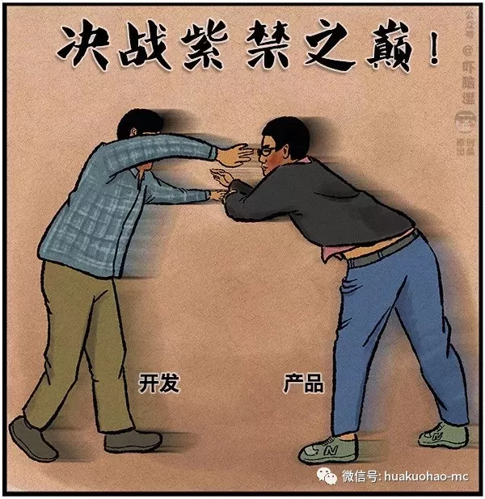

产品经理，不是真的经理，程序员也不是真的猿。
网上一直流传着这样一个段子。“做不了程序员的，转行去做运维了，做不了运维的，改做产品了，做不了产品的，改去做运营了，做不了运营的呢，转身又去报班参加程序员培训了。”
上面的内容终归是个段子，我们应该敬畏每一个行业，因为术业有专攻，更因为人情练达皆学问。但程序员跟产品经理的互撕是这个行业永远避不开的话题，每一次的互撕就像西门吹雪跟叶孤城决战紫禁之巅一样扣人心弦，杀机四起。事后便会成为大家的谈资。

中国有句俗语叫做狗咬狗一嘴毛，我认为形容产品跟开发互撕最为贴切了。因为我觉得双方互撕的本质原因是双方做的都不够好，不够优秀。
我们可以简单的把产品和开发分为两类，一类普通的，一类优秀的。
普通的产品：我要个色彩斑斓的黑，手机壳颜色根据心情改变，总之就是异想天开，想起一出是一出，完全活在自己的世界里，毫无逻辑思维可言，更没有整体规划。
优秀的产品：足够强的逻辑思维能力，对所负责的产品，上下游系统，数据流，业务模型及其了解，甚至有过数据建模，或者相关开发工作经验，也会积极了解市场及商务上的更多细节。
优秀的开发：扎实的基本功，多年的项目经验，先思考，后建模，最后写代码。
普通的开发：主要靠吭哧C，吭哧V，不求甚解，拿到需求之后，立刻开始写代码，不做深入思考。
其实日常工作中无外乎这几类人互相组合。不同的人组合到一起，碰撞出不同的火花。所谓的优秀公司及团队只不过是优秀的人多了一些而已。
这里以买鞋需求为例，给大家简单演义一下，你们感受一下。
普通产品VS普通开发
产品：帮我去商场买双鞋吧。
开发：好嘞，你等着，马上就好。
开发：鞋来了，正宗老北京布鞋，千层底，特舒服！
产品：嗯…，我要的不是布鞋，我要的是运动鞋。
开发：行，你等会儿，我在给你换一双去。
开发：鞋来了，阿迪王运动鞋，最新款。
产品：我不要阿迪王，要的是阿迪达斯。
开发：哎，我现在去给你换。
开发：鞋来了，正宗阿迪达斯，工厂店买的。
产品：嗯…，还是不对，我要的是白色的运动鞋，不要黑色的休闲鞋。
开发：尼玛，那你不早说。（嘴里巴拉巴拉……，但还是去换鞋了。）
产品：你也没早问啊，一个需求做了这么久还没做明白，巴拉巴拉……。
开发：鞋来了，阿迪达斯，白色的，运动鞋。
产品：好的，我看看，咦？好像尺码小了，而且我想要个冬款的，跑步用的运动鞋。
开发：我去，你故意耍老子，就这个了，老子为了改需求已经通宵好几个晚上了，爱穿就穿，不穿拉到！
产品：不行，你必须现在去给我换，不然就去找领导。
最后的画面你们自行脑补吧。
普通产品VS优秀开发
产品：去商场帮我买双鞋吧。
开发：把需求说具体一点，不然没法实现。
产品：嗯，具体点儿的需求是给我买一双运动鞋。
开发：把需求可以再说具体点儿吗，这个需求还是太模糊了。
产品：我已经说了，要一双运动鞋，还不够明确吗?(已经生气了，心里在想，程序员脑子都在想什么，中国话听不懂吗？)
开发：你要把品牌，颜色，尺码，价位都告诉我，最好在给我发一张图片（这叫产品原型）,如果商场没有同款，我该怎么办？（这叫产品的异常及错误处理方案）
产品：哦，说的好像是那么回事儿，程序员脑子就是牛逼，想的周到。
开发：你最好写个需求文档，然后发个邮件。
看到了吗，优秀的程序员会在项目开始前，主动帮助产品把需求明确细化，这样可以避免开发阶段的无味加班和无效工作。
优秀产品VS普通开发
产品：给我买一双，阿迪的，白色的，42码的，价位在800-1000人民币之间，跑步用的冬款运动鞋，这是是需求文档，你可以看一下。
开发：好的，你等着。马上给你买回来。风一样消失在产品的视线中。
过了一会儿，产品经理电话响了。
开发：我在商场看到了阿迪王的鞋，你看可以吗？
产品：我要的是阿迪达斯，不是阿迪王……
开发：我找了好久，实在找不到，这个商场可能没有（这在技术上实现起来比较困难），我需要去另外一个商场，你等我一会儿(项目可能延期)。
产品：……，独自风中凌乱。
开发：我昨天加班了，找到阿迪达斯了，这里面有个春款的，你凑合穿吧(有很多bug)。项目马上deadline了，先用这个吧。
产品：我天天陪你加班，最终却做出个这么个东西，完全体现不出我的想法。
开发：要的需求这么刁钻，春款跟冬款有毛区别，都能跑步。
一个优秀的开发是多么重要，难怪一线大厂养了了那么多优秀的程序员。
优秀产品VS优秀开发
产品：帮我去商场买双鞋吧。阿迪的，白色的，42码的，价位在800-1000人民币之间，跑步用的冬款运动鞋，这是是需求文档，你可以看一下。
开发：好的，我先看一下需求文档，做一下技术评估。最迟今天下班前给你结论。
产品：好的，有什么不妥之处，随时沟通。
开发：我看了一下，大概有几个问题需要明确，这双鞋要穿多久，每天穿着的频率，需要防水功能吗？
产品：大概穿两年左右，每周穿一次，不需要防水功能。
开发：好的，我去帮你到商场选鞋。
优秀的开发跟优秀的产品在设计阶段就已经不断的配合了，这个过程将持续到产品的整个生命周期中，这将避免很多不必要的返工跟加班。
结束
上面的场景虽然是我演义的，但想现实工作中也大抵如此，我写这篇文章的目的是想表达，各位应该尽量跟优秀的人一起工作，这样自己的成长速度跟工作效率才是最高的。如何才能够跟优秀的人一起工作呢，我能想到的就是让自己变得足够优秀，优秀到可以加入一个更好的团队跟平台。
下一篇给各位讲一个真实的故事，一个程序员小W的成长过程。